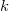

/math-9dd4e461268c8034f5c8564e155c67a6.png "x") , with parameters
, with parameters /math-0cc175b9c0f1b6a831c399e269772661.png "a") and
and /math-92eb5ffee6ae2fec3ad71c777531578f.png "b") .
.
/math-7b8b965ad4bca0e41ab51de7b31363a1.png "n") ,
, /math-83878c91171338902e0fe0fb97a8c47a.png "p") .
.
/math-9ca61f458c78bb5591d04aaaa14da0e7.png "\chi^2") distribution with real degrees of freedom.
distribution with real degrees of freedom.
/math-63b0905678617d28c7c800f185ebf795.png "P(x)=\frac 1{\sqrt{2\pi }}\int_{-\infty }^xe^{\frac{-u^2}2}du") .
.
/math-800618943025315f869e4e1f09471012.png "F") cumulative distribution function at , with parameters
cumulative distribution function at , with parameters/math-952988da97fbd8f2ea65990c03eac425.png "a") and
and/math-f6897073ddb650de60056fa4f394f487.png "b") , and lower tail.
, and lower tail.
/math-9bc5cb6be624ca3767c2ac8508ce8018.png "\alpha") and
and /math-b0603860fcffe94e5b8eec59ed813421.png "\beta") .
.
/math-9ae276e23d6918886f91dd0cfcc693fe.png "\mu") and
and /math-a2ab7d71a0f07f388ff823293c147d21.png "\sigma") .
distribution.
.
distribution.
/math-bf64ba6aa4c2d7bb776f5b41188a0c1b.png "\digamma") or variance-ratio distribution.
or variance-ratio distribution.
/math-c6a6eb61fd9c6c913da73b3642ca147d.png "\lambda") .
.
| Name | Brief | Example |
|---|---|---|
| Betacdf | Computes beta cumulative distribution function at , with parameters and .
|
|
| Binocdf | Computes the lower tail, upper tail and point probabilities in given value , associated with a Binomial distribution using the corresponding parameters in , .
|
|
| Bivarnormcdf | Computes the lower tail probability for the bivariate Normal distribution. | |
| Chi2cdf | Computes the lower tail probability for the distribution with real degrees of freedom.
|
|
| Cumul normal | Evaluates the cumulative Normal distribution function .
|
|
| Cumul normal complem | Evaluates an approximate value for the complement of the cumulative normal distribution function. | |
| Erf | The error function (or normal error integral). | |
| Erfc | The approximate value for the complement of the error function. | |
| Erfcinv | Return value of the inverse of the complementary error function for specified y. | |
| Erfinv | Return value of the inverse error function for specified y. | |
| Fcdf | Computes cumulative distribution function at , with parameters and, and lower tail.
|
|
| Foldnormcdf | Computes the lower tail probability for the Folded Normal distribution. | |
| Gamcdf | Computes the lower tail probability for the gamma distribution with real degrees of freedom, with parameters and .
|
|
| Hygecdf | Computes the lower tail probabilities in given value , associated with a hypergeometric distribution using the corresponding parameters in ,nand . | |
| Logncdf | Computes the lower tail probability for the Lognormal cumulative distribution with parameters and .
|
|
| Ncbetacdf | Computes the cdf with the lower tail of the non-central beta distribution. | |
| Ncchi2cdf | Computes the probability associated with the lower tail of the non-central distribution.
|
|
| Ncfcdf | Computes the probability associated with the lower tail of the non-central or variance-ratio distribution.
|
|
| Nctcdf | Computes the lower tail probability for the non-central Student's t-distribution. | |
| Normcdf | Computes the lower tail probability for the normal cumulative distribution. | |
| Poisscdf | Computes the lower tail probabilities in given value , associated with a Poisson distribution using the corresponding parameters in .
|
|
| Prob | Computes the Probability Density (for a normal distribution) integrated from -x to +x. | |
| Srangecdf | Computes the probability associated with the lower tail of the distribution of the Studentized range statistic. | |
| Tcdf | Computes the cumulative distribution function of Student's t-distribution. | |
| Wblcdf | computes the low tail Weibull cumulative distribution function for value X using the parameters A and B. |